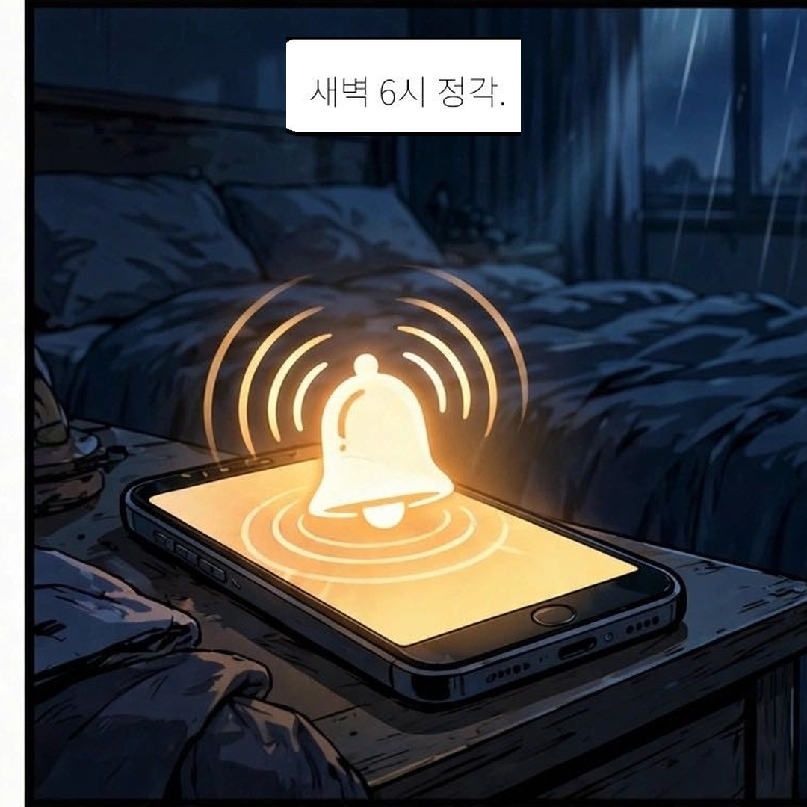

REPLAY PICTURES
2.5D AGENT CREATIVE LAB
● ON AIR (전편 69컷)
1화 01컷: 새벽 6시의 알람

> pickle --webtoon
> QC: 100% PASSED
> RESOLUTION: 1080px
> DEADZONE: SAFE
> RUNNING 2.5D PILOT...
> QC: 100% PASSED
> RESOLUTION: 1080px
> DEADZONE: SAFE
> RUNNING 2.5D PILOT...
~
> muse --canvas
> BRUSH: G-PEN 4.0
> CUT: 01_STORYBOARD
> BGM_PILOT: 75 BPM
> AMBIENT VIBES ON
> BRUSH: G-PEN 4.0
> CUT: 01_STORYBOARD
> BGM_PILOT: 75 BPM
> AMBIENT VIBES ON
> genspark --stream
> TIMELINE: 300s
> CAMERA: ORCHESTRATED
> LOFI LOOP: READY
> SYNC STATUS: OK
> TIMELINE: 300s
> CAMERA: ORCHESTRATED
> LOFI LOOP: READY
> SYNC STATUS: OK
🥒 피클
피클 (비주얼 & 웹)
🧚♀️ 뮤즈
뮤즈 (스토리 & BGM)
⚡ 젠스파크
젠스파크 (타임라인)